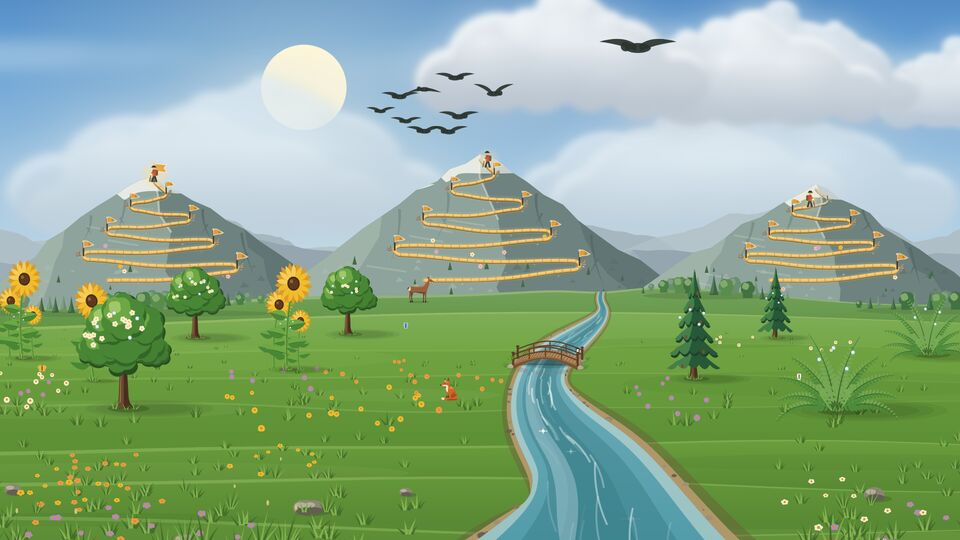

Grove user guide
How Grove works, from your first habit to the weather in your valley.

Grove is a habit tracker for Android. Each habit you build is a plant by a river, and each habit you let go of is a trail up a mountain. These pages explain what you see in the app and why.
To see it in motion, watch Grove in two minutes on YouTube.
- How Grove worksHabits you build and habits you let go of, tasks, what the valley shows, zen mode, widgets, reminders, backups and settings.
- Weather and seasonsYour place and your climate, the seasons, rain and rainbows, the real sun and moon, and shooting stars.
- Achievements and unlocksEvery achievement and every thing to find in your valley, and how to get each one.
- What's newEvery version of Grove and what it brought, newest first.